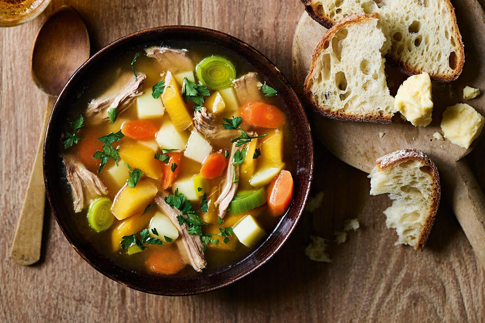
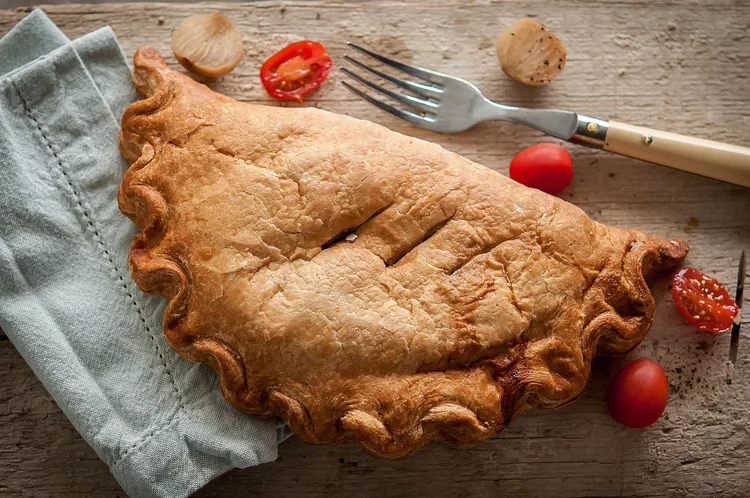
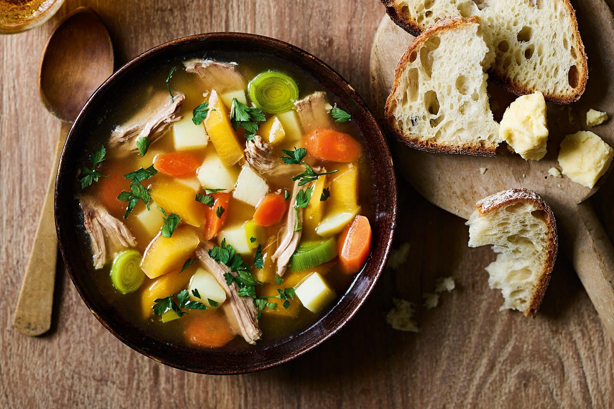
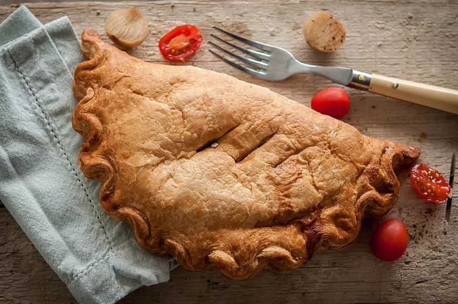

Welsh food dishes
"Cooking and eating with fresh, locally sourced produce is something which Wales is proud of, with many of its traditional recipes created with just a few quality ingredients." - Unknown

 


